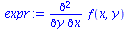
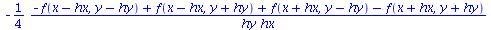

| > | read("FD.mpl"):MFD(): |
| Warning, grid_functions is not assigned |
| FD table updated, see the content using SFDT() command |
| > | expr:=diff(f(x,y),x,y); |
|  |
| > | Stencil(expr,[[-1,0,1],[-1,0,1]],[hx,hy]); |
|  |
| > | Stencil(expr,[[-1,0,1],[-1,0,1]],[hx,hy],discretized=true); |
More Complex Example:
| > | expr:=diff(u(x,t,y,z),x,x,t,z): |
| > | A:=Stencil(expr,[[0,1,-1,3],[-1,0,1],[0,1,2]],[hx,ht,hz]); |
| > | B:=A: |
| > | stp_tb:=[hx,ht,hz]: |
| > | for ii from 1 to nops(stp_tb) do |
| > | B:=convert(series(B,stp_tb[ii],4),polynom): |
| > | end do: |
| > | B; |
| > | residual:=simplify(eval(B-expr,{ht=0,hx=0,hz=0})); |
| > |